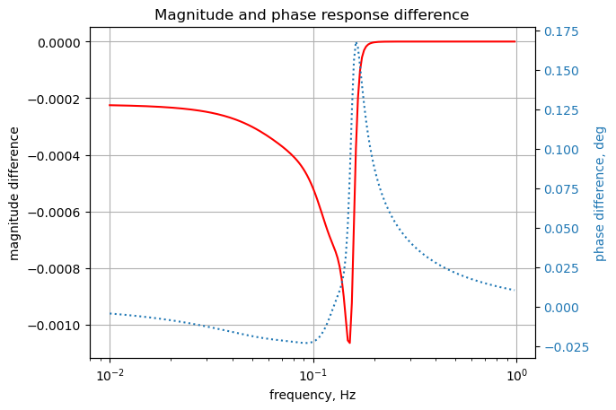

import os
from sympy import *
import numpy as np
from scipy import signal
import matplotlib.pyplot as plt
init_printing()15 test_12
This test circuit is a 7th order low pass filter, Chebyshev response, 0.1 dB of ripple from [1].

The netlist generated by LTSpice:
* test_12_v1.asc
C3 2 0 3.7642
I1 0 1 AC 1
C5 3 0 4.015
C7 4 0 3.0182 Rser=0
L2 1 2 0.7529 Rser=0
L4 2 3 0.9276 Rser=0
L6 3 4 0.9142 Rser=0
Rs 1 0 0.5
Rl 4 0 1
C1 1 0 1.5948
;op
.ac list 0.159154943091895
* ;.ac dec 100 0.01 1
.backanno
.endThe netlist generated by LTSpice was modified to remove Rser=0 from inductor lines and ‘AC 1’ from I1. This is the modified net list:
* test_12_v1.asc
C3 2 0 3.7642
I1 0 1 1
C5 3 0 4.015
C7 4 0 3.0182
L2 1 2 0.7529
L4 2 3 0.9276
L6 3 4 0.9142
Rs 1 0 0.5
Rl 4 0 1
C1 1 0 1.5948
;op
* ;.ac list 0.159154943091895
.ac dec 100 0.01 1
.backanno
.endThis netlist is read into the Symbolic Modified Nodal Analysis Jupyter notebook and the following circuit equations were generated.
⎛ 1 ⎞
I_L2 + v₁⋅⎜C₁⋅s + ──⎟ = I₁
⎝ Rs⎠
C₃⋅s⋅v₂ - I_L2 + I_L4 = 0
C₅⋅s⋅v₃ - I_L4 + I_L6 = 0
⎛ 1 ⎞
-I_L6 + v₄⋅⎜C₇⋅s + ──⎟ = 0
⎝ Rl⎠
-I_L2⋅L₂⋅s + v₁ - v₂ = 0
-I_L4⋅L₄⋅s + v₂ - v₃ = 0
-I_L6⋅L₆⋅s + v₃ - v₄ = 0
⎛ 1 ⎞
I_L2 + v₁⋅⎜C₁⋅s + ──⎟ = I₁
⎝ Rs⎠
C₃⋅s⋅v₂ - I_L2 + I_L4 = 0
C₅⋅s⋅v₃ - I_L4 + I_L6 = 0
⎛ 1 ⎞
-I_L6 + v₄⋅⎜C₇⋅s + ──⎟ = 0
⎝ Rl⎠
-I_L2⋅L₂⋅s + v₁ - v₂ = 0
-I_L4⋅L₄⋅s + v₂ - v₃ = 0
-I_L6⋅L₆⋅s + v₃ - v₄ = 0
⎛ 1 ⎞
I_L2 + v₁⋅⎜C₁⋅s + ──⎟ = I₁
⎝ Rs⎠
C₃⋅s⋅v₂ - I_L2 + I_L4 = 0
C₅⋅s⋅v₃ - I_L4 + I_L6 = 0
⎛ 1 ⎞
-I_L6 + v₄⋅⎜C₇⋅s + ──⎟ = 0
⎝ Rl⎠
-I_L2⋅L₂⋅s + v₁ - v₂ = 0
-I_L4⋅L₄⋅s + v₂ - v₃ = 0
-I_L6⋅L₆⋅s + v₃ - v₄ = 0
Reference:
[1] Anatol I. Zverev, Handbook of Filter Synthesis, John Wiley & Sons, 1967
from sympy.physics.control.lti import TransferFunction, Series
from sympy.physics.control.control_plots import pole_zero_plot, bode_plotCopy the text strings generated by the Symbolic Modified Nodal Analysis Jupyter notebook to the cell below.
v3, L2, I_L2, C1, C3, I1, L4, I_L4, v2, Rs, C5, v4, v1, L6, Rl, I_L6, C7, s = symbols(' v3 L2 I_L2 C1 C3 I1 L4 I_L4 v2 Rs C5 v4 v1 L6 Rl I_L6 C7 s ')
A = Matrix([[C1*s + 1/Rs, 0, 0, 0, 1, 0, 0], [0, C3*s, 0, 0, -1, 1, 0], [0, 0, C5*s, 0, 0, -1, 1], [0, 0, 0, C7*s + 1/Rl, 0, 0, -1], [1, -1, 0, 0, -L2*s, 0, 0], [0, 1, -1, 0, 0, -L4*s, 0], [0, 0, 1, -1, 0, 0, -L6*s]])
X = Matrix( [v1, v2, v3, v4, I_L2, I_L4, I_L6] )
Z = Matrix( [I1, 0, 0, 0, 0, 0, 0] )
equ = Eq(A*X,Z)
equ\(\displaystyle \left[\begin{matrix}I_{L2} + v_{1} \left(C_{1} s + \frac{1}{Rs}\right)\\C_{3} s v_{2} - I_{L2} + I_{L4}\\C_{5} s v_{3} - I_{L4} + I_{L6}\\- I_{L6} + v_{4} \left(C_{7} s + \frac{1}{Rl}\right)\\- I_{L2} L_{2} s + v_{1} - v_{2}\\- I_{L4} L_{4} s + v_{2} - v_{3}\\- I_{L6} L_{6} s + v_{3} - v_{4}\end{matrix}\right] = \left[\begin{matrix}I_{1}\\0\\0\\0\\0\\0\\0\end{matrix}\right]\)
15.1 Symbolic solution
Symbolic equations are too long to display in a useful and meaningful way.
symbolic_solution = solve(equ,X)
#symbolic_solutionleft_side = list(symbolic_solution.keys()) right_side = list(symbolic_solution.values())
for i in range(len(symbolic_solution)): pprint(Eq(left_side[i],right_side[i]))
The transfer function H(s)=V4(s)/I1
# display the transfer function
H = symbolic_solution[v4]/I1
H\(\displaystyle \frac{Rl Rs}{C_{1} C_{3} C_{5} C_{7} L_{2} L_{4} L_{6} Rl Rs s^{7} + C_{1} C_{3} C_{5} L_{2} L_{4} L_{6} Rs s^{6} + C_{1} C_{3} C_{5} L_{2} L_{4} Rl Rs s^{5} + C_{1} C_{3} C_{7} L_{2} L_{4} Rl Rs s^{5} + C_{1} C_{3} C_{7} L_{2} L_{6} Rl Rs s^{5} + C_{1} C_{3} L_{2} L_{4} Rs s^{4} + C_{1} C_{3} L_{2} L_{6} Rs s^{4} + C_{1} C_{3} L_{2} Rl Rs s^{3} + C_{1} C_{5} C_{7} L_{2} L_{6} Rl Rs s^{5} + C_{1} C_{5} C_{7} L_{4} L_{6} Rl Rs s^{5} + C_{1} C_{5} L_{2} L_{6} Rs s^{4} + C_{1} C_{5} L_{2} Rl Rs s^{3} + C_{1} C_{5} L_{4} L_{6} Rs s^{4} + C_{1} C_{5} L_{4} Rl Rs s^{3} + C_{1} C_{7} L_{2} Rl Rs s^{3} + C_{1} C_{7} L_{4} Rl Rs s^{3} + C_{1} C_{7} L_{6} Rl Rs s^{3} + C_{1} L_{2} Rs s^{2} + C_{1} L_{4} Rs s^{2} + C_{1} L_{6} Rs s^{2} + C_{1} Rl Rs s + C_{3} C_{5} C_{7} L_{2} L_{4} L_{6} Rl s^{6} + C_{3} C_{5} C_{7} L_{4} L_{6} Rl Rs s^{5} + C_{3} C_{5} L_{2} L_{4} L_{6} s^{5} + C_{3} C_{5} L_{2} L_{4} Rl s^{4} + C_{3} C_{5} L_{4} L_{6} Rs s^{4} + C_{3} C_{5} L_{4} Rl Rs s^{3} + C_{3} C_{7} L_{2} L_{4} Rl s^{4} + C_{3} C_{7} L_{2} L_{6} Rl s^{4} + C_{3} C_{7} L_{4} Rl Rs s^{3} + C_{3} C_{7} L_{6} Rl Rs s^{3} + C_{3} L_{2} L_{4} s^{3} + C_{3} L_{2} L_{6} s^{3} + C_{3} L_{2} Rl s^{2} + C_{3} L_{4} Rs s^{2} + C_{3} L_{6} Rs s^{2} + C_{3} Rl Rs s + C_{5} C_{7} L_{2} L_{6} Rl s^{4} + C_{5} C_{7} L_{4} L_{6} Rl s^{4} + C_{5} C_{7} L_{6} Rl Rs s^{3} + C_{5} L_{2} L_{6} s^{3} + C_{5} L_{2} Rl s^{2} + C_{5} L_{4} L_{6} s^{3} + C_{5} L_{4} Rl s^{2} + C_{5} L_{6} Rs s^{2} + C_{5} Rl Rs s + C_{7} L_{2} Rl s^{2} + C_{7} L_{4} Rl s^{2} + C_{7} L_{6} Rl s^{2} + C_{7} Rl Rs s + L_{2} s + L_{4} s + L_{6} s + Rl + Rs}\)
Get the numerator and denominator of the transfer function.
num, denom = fraction(H) #returns numerator and denominatornum\(\displaystyle Rl Rs\)
denom\(\displaystyle C_{1} C_{3} C_{5} C_{7} L_{2} L_{4} L_{6} Rl Rs s^{7} + C_{1} C_{3} C_{5} L_{2} L_{4} L_{6} Rs s^{6} + C_{1} C_{3} C_{5} L_{2} L_{4} Rl Rs s^{5} + C_{1} C_{3} C_{7} L_{2} L_{4} Rl Rs s^{5} + C_{1} C_{3} C_{7} L_{2} L_{6} Rl Rs s^{5} + C_{1} C_{3} L_{2} L_{4} Rs s^{4} + C_{1} C_{3} L_{2} L_{6} Rs s^{4} + C_{1} C_{3} L_{2} Rl Rs s^{3} + C_{1} C_{5} C_{7} L_{2} L_{6} Rl Rs s^{5} + C_{1} C_{5} C_{7} L_{4} L_{6} Rl Rs s^{5} + C_{1} C_{5} L_{2} L_{6} Rs s^{4} + C_{1} C_{5} L_{2} Rl Rs s^{3} + C_{1} C_{5} L_{4} L_{6} Rs s^{4} + C_{1} C_{5} L_{4} Rl Rs s^{3} + C_{1} C_{7} L_{2} Rl Rs s^{3} + C_{1} C_{7} L_{4} Rl Rs s^{3} + C_{1} C_{7} L_{6} Rl Rs s^{3} + C_{1} L_{2} Rs s^{2} + C_{1} L_{4} Rs s^{2} + C_{1} L_{6} Rs s^{2} + C_{1} Rl Rs s + C_{3} C_{5} C_{7} L_{2} L_{4} L_{6} Rl s^{6} + C_{3} C_{5} C_{7} L_{4} L_{6} Rl Rs s^{5} + C_{3} C_{5} L_{2} L_{4} L_{6} s^{5} + C_{3} C_{5} L_{2} L_{4} Rl s^{4} + C_{3} C_{5} L_{4} L_{6} Rs s^{4} + C_{3} C_{5} L_{4} Rl Rs s^{3} + C_{3} C_{7} L_{2} L_{4} Rl s^{4} + C_{3} C_{7} L_{2} L_{6} Rl s^{4} + C_{3} C_{7} L_{4} Rl Rs s^{3} + C_{3} C_{7} L_{6} Rl Rs s^{3} + C_{3} L_{2} L_{4} s^{3} + C_{3} L_{2} L_{6} s^{3} + C_{3} L_{2} Rl s^{2} + C_{3} L_{4} Rs s^{2} + C_{3} L_{6} Rs s^{2} + C_{3} Rl Rs s + C_{5} C_{7} L_{2} L_{6} Rl s^{4} + C_{5} C_{7} L_{4} L_{6} Rl s^{4} + C_{5} C_{7} L_{6} Rl Rs s^{3} + C_{5} L_{2} L_{6} s^{3} + C_{5} L_{2} Rl s^{2} + C_{5} L_{4} L_{6} s^{3} + C_{5} L_{4} Rl s^{2} + C_{5} L_{6} Rs s^{2} + C_{5} Rl Rs s + C_{7} L_{2} Rl s^{2} + C_{7} L_{4} Rl s^{2} + C_{7} L_{6} Rl s^{2} + C_{7} Rl Rs s + L_{2} s + L_{4} s + L_{6} s + Rl + Rs\)
collect((denom).expand(),s)\(\displaystyle C_{1} C_{3} C_{5} C_{7} L_{2} L_{4} L_{6} Rl Rs s^{7} + Rl + Rs + s^{6} \left(C_{1} C_{3} C_{5} L_{2} L_{4} L_{6} Rs + C_{3} C_{5} C_{7} L_{2} L_{4} L_{6} Rl\right) + s^{5} \left(C_{1} C_{3} C_{5} L_{2} L_{4} Rl Rs + C_{1} C_{3} C_{7} L_{2} L_{4} Rl Rs + C_{1} C_{3} C_{7} L_{2} L_{6} Rl Rs + C_{1} C_{5} C_{7} L_{2} L_{6} Rl Rs + C_{1} C_{5} C_{7} L_{4} L_{6} Rl Rs + C_{3} C_{5} C_{7} L_{4} L_{6} Rl Rs + C_{3} C_{5} L_{2} L_{4} L_{6}\right) + s^{4} \left(C_{1} C_{3} L_{2} L_{4} Rs + C_{1} C_{3} L_{2} L_{6} Rs + C_{1} C_{5} L_{2} L_{6} Rs + C_{1} C_{5} L_{4} L_{6} Rs + C_{3} C_{5} L_{2} L_{4} Rl + C_{3} C_{5} L_{4} L_{6} Rs + C_{3} C_{7} L_{2} L_{4} Rl + C_{3} C_{7} L_{2} L_{6} Rl + C_{5} C_{7} L_{2} L_{6} Rl + C_{5} C_{7} L_{4} L_{6} Rl\right) + s^{3} \left(C_{1} C_{3} L_{2} Rl Rs + C_{1} C_{5} L_{2} Rl Rs + C_{1} C_{5} L_{4} Rl Rs + C_{1} C_{7} L_{2} Rl Rs + C_{1} C_{7} L_{4} Rl Rs + C_{1} C_{7} L_{6} Rl Rs + C_{3} C_{5} L_{4} Rl Rs + C_{3} C_{7} L_{4} Rl Rs + C_{3} C_{7} L_{6} Rl Rs + C_{3} L_{2} L_{4} + C_{3} L_{2} L_{6} + C_{5} C_{7} L_{6} Rl Rs + C_{5} L_{2} L_{6} + C_{5} L_{4} L_{6}\right) + s^{2} \left(C_{1} L_{2} Rs + C_{1} L_{4} Rs + C_{1} L_{6} Rs + C_{3} L_{2} Rl + C_{3} L_{4} Rs + C_{3} L_{6} Rs + C_{5} L_{2} Rl + C_{5} L_{4} Rl + C_{5} L_{6} Rs + C_{7} L_{2} Rl + C_{7} L_{4} Rl + C_{7} L_{6} Rl\right) + s \left(C_{1} Rl Rs + C_{3} Rl Rs + C_{5} Rl Rs + C_{7} Rl Rs + L_{2} + L_{4} + L_{6}\right)\)
solve(denom,s) #computes the symbolic roots of a univariate polynomial; will fail for most high-degree polynomials (five or greater)\(\displaystyle \left[ \right]\)
As indicated by the comment above, the degree was too high for SymPy to extract the roots in symbolic form.
15.2 Numeric solution
# put the component values into dictionary format
component_values = {
C3:3.7642e+00,
I1:1.0000e+00,
C5:4.0150e+00,
C7:3.0182e+00,
L2:7.5290e-01,
L4:9.2760e-01,
L6:9.1420e-01,
Rs:5.0000e-01,
Rl:1.0000e+00,
C1:1.5948e+00}component_values\(\displaystyle \left\{ C_{1} : 1.5948, \ C_{3} : 3.7642, \ C_{5} : 4.015, \ C_{7} : 3.0182, \ I_{1} : 1.0, \ L_{2} : 0.7529, \ L_{4} : 0.9276, \ L_{6} : 0.9142, \ Rl : 1.0, \ Rs : 0.5\right\}\)
equ1a = equ.subs(component_values)
equ1a\(\displaystyle \left[\begin{matrix}I_{L2} + v_{1} \cdot \left(1.5948 s + 2.0\right)\\- I_{L2} + I_{L4} + 3.7642 s v_{2}\\- I_{L4} + I_{L6} + 4.015 s v_{3}\\- I_{L6} + v_{4} \cdot \left(3.0182 s + 1.0\right)\\- 0.7529 I_{L2} s + v_{1} - v_{2}\\- 0.9276 I_{L4} s + v_{2} - v_{3}\\- 0.9142 I_{L6} s + v_{3} - v_{4}\end{matrix}\right] = \left[\begin{matrix}1.0\\0\\0\\0\\0\\0\\0\end{matrix}\right]\)
The equations above are using the component values and the Laplace variable.
# solve the equations.
u1 = solve(equ1a,X)
u1 # the solution is too long to display correctly\(\displaystyle \left\{ I_{L2} : \frac{6.04405263388334 \cdot 10^{25} s^{5} + 2.00253549595234 \cdot 10^{25} s^{4} + 7.190983534405 \cdot 10^{25} s^{3} + 1.6567838375 \cdot 10^{25} s^{2} + 1.68709375 \cdot 10^{25} s + 1.5625 \cdot 10^{24}}{7.25724461529537 \cdot 10^{25} s^{7} + 1.15056287292761 \cdot 10^{26} s^{6} + 2.02545818309551 \cdot 10^{26} s^{5} + 1.88798202184355 \cdot 10^{26} s^{4} + 1.50887601625463 \cdot 10^{26} s^{3} + 7.744787275 \cdot 10^{25} s^{2} + 2.747125 \cdot 10^{25} s + 4.6875 \cdot 10^{24}}, \ I_{L4} : \frac{1.73099099009375 \cdot 10^{25} s^{3} + 5.7351765625 \cdot 10^{24} s^{2} + 1.0989375 \cdot 10^{25} s + 1.5625 \cdot 10^{24}}{7.25724461529537 \cdot 10^{25} s^{7} + 1.15056287292761 \cdot 10^{26} s^{6} + 2.02545818309551 \cdot 10^{26} s^{5} + 1.88798202184355 \cdot 10^{26} s^{4} + 1.50887601625463 \cdot 10^{26} s^{3} + 7.744787275 \cdot 10^{25} s^{2} + 2.747125 \cdot 10^{25} s + 4.6875 \cdot 10^{24}}, \ I_{L6} : \frac{4.7159375 \cdot 10^{24} s + 1.5625 \cdot 10^{24}}{7.25724461529537 \cdot 10^{25} s^{7} + 1.15056287292761 \cdot 10^{26} s^{6} + 2.02545818309551 \cdot 10^{26} s^{5} + 1.88798202184355 \cdot 10^{26} s^{4} + 1.50887601625463 \cdot 10^{26} s^{3} + 7.744787275 \cdot 10^{25} s^{2} + 2.747125 \cdot 10^{25} s + 4.6875 \cdot 10^{24}}, \ v_{1} : \frac{4.55056722805077 \cdot 10^{25} s^{6} + 1.50770897490251 \cdot 10^{25} s^{5} + 7.01975874546449 \cdot 10^{25} s^{4} + 1.77938752919125 \cdot 10^{25} s^{3} + 2.720718315625 \cdot 10^{25} s^{2} + 4.05421875 \cdot 10^{24} s + 1.5625 \cdot 10^{24}}{7.25724461529537 \cdot 10^{25} s^{7} + 1.15056287292761 \cdot 10^{26} s^{6} + 2.02545818309551 \cdot 10^{26} s^{5} + 1.88798202184355 \cdot 10^{26} s^{4} + 1.50887601625463 \cdot 10^{26} s^{3} + 7.744787275 \cdot 10^{25} s^{2} + 2.747125 \cdot 10^{25} s + 4.6875 \cdot 10^{24}}, \ v_{2} : \frac{1.60566724241096 \cdot 10^{25} s^{4} + 5.319949779375 \cdot 10^{24} s^{3} + 1.45050543125 \cdot 10^{25} s^{2} + 2.8778125 \cdot 10^{24} s + 1.5625 \cdot 10^{24}}{7.25724461529537 \cdot 10^{25} s^{7} + 1.15056287292761 \cdot 10^{26} s^{6} + 2.02545818309551 \cdot 10^{26} s^{5} + 1.88798202184355 \cdot 10^{26} s^{4} + 1.50887601625463 \cdot 10^{26} s^{3} + 7.744787275 \cdot 10^{25} s^{2} + 2.747125 \cdot 10^{25} s + 4.6875 \cdot 10^{24}}, \ v_{3} : \frac{4.3113100625 \cdot 10^{24} s^{2} + 1.4284375 \cdot 10^{24} s + 1.5625 \cdot 10^{24}}{7.25724461529537 \cdot 10^{25} s^{7} + 1.15056287292761 \cdot 10^{26} s^{6} + 2.02545818309551 \cdot 10^{26} s^{5} + 1.88798202184355 \cdot 10^{26} s^{4} + 1.50887601625463 \cdot 10^{26} s^{3} + 7.744787275 \cdot 10^{25} s^{2} + 2.747125 \cdot 10^{25} s + 4.6875 \cdot 10^{24}}, \ v_{4} : \frac{1.5625 \cdot 10^{24}}{7.25724461529537 \cdot 10^{25} s^{7} + 1.15056287292761 \cdot 10^{26} s^{6} + 2.02545818309551 \cdot 10^{26} s^{5} + 1.88798202184355 \cdot 10^{26} s^{4} + 1.50887601625463 \cdot 10^{26} s^{3} + 7.744787275 \cdot 10^{25} s^{2} + 2.747125 \cdot 10^{25} s + 4.6875 \cdot 10^{24}}\right\}\)
The transfer function H(s)=V4(s)/I1
TF = u1[v4]/component_values[I1]
TF\(\displaystyle \frac{1.5625 \cdot 10^{24}}{7.25724461529537 \cdot 10^{25} s^{7} + 1.15056287292761 \cdot 10^{26} s^{6} + 2.02545818309551 \cdot 10^{26} s^{5} + 1.88798202184355 \cdot 10^{26} s^{4} + 1.50887601625463 \cdot 10^{26} s^{3} + 7.744787275 \cdot 10^{25} s^{2} + 2.747125 \cdot 10^{25} s + 4.6875 \cdot 10^{24}}\)
The large exponents can be removed by dividing throught by the numberator. First extract the numerator and denominator.
num, denom = fraction(TF) #returns numerator and denominatornum\(\displaystyle 1.5625 \cdot 10^{24}\)
denom\(\displaystyle 7.25724461529537 \cdot 10^{25} s^{7} + 1.15056287292761 \cdot 10^{26} s^{6} + 2.02545818309551 \cdot 10^{26} s^{5} + 1.88798202184355 \cdot 10^{26} s^{4} + 1.50887601625463 \cdot 10^{26} s^{3} + 7.744787275 \cdot 10^{25} s^{2} + 2.747125 \cdot 10^{25} s + 4.6875 \cdot 10^{24}\)
Divide both numerator and denominator by the numerator.
denom = denom/num
denom\(\displaystyle 46.4463655378904 s^{7} + 73.6360238673669 s^{6} + 129.629323718113 s^{5} + 120.830849397987 s^{4} + 96.568065040296 s^{3} + 49.56663856 s^{2} + 17.5816 s + 3.0\)
num = num/num
num\(\displaystyle 1.0\)
Poly(denom, s).all_coeffs()\(\displaystyle \left[ 46.4463655378904, \ 73.6360238673669, \ 129.629323718113, \ 120.830849397987, \ 96.568065040296, \ 49.56663856, \ 17.5816, \ 3.0\right]\)
solve(denom,s)\(\displaystyle \left[ -0.35279422422017, \ -0.31784520158577 - 0.434123823790121 i, \ -0.31784520158577 + 0.434123823790121 i, \ -0.219953275559662 - 0.782281046050157 i, \ -0.219953275559662 + 0.782281046050157 i, \ -0.0785039364726643 - 0.975486602515317 i, \ -0.0785039364726643 + 0.975486602515317 i\right]\)
## plot poles and zeros
tf2 = TransferFunction(num, denom, s)
#pole_zero_plot(tf1,show=False)
pole_zero_plot(tf2,show=True)bode_plot(tf2,initial_exp=-2, final_exp=0,freq_unit='Hz', phase_unit='deg') As shown above, SymPy can easily plot the poles and zeros as well as the Bode function.
15.3 AC analysis
Solve equations for \(\omega\) equal to 1 radian per second, s = 1j.
equ1a_1rad_per_s = equ1a.subs({s:1j})
equ1a_1rad_per_s # display the equations\(\displaystyle \left[\begin{matrix}I_{L2} + v_{1} \cdot \left(2.0 + 1.5948 i\right)\\- I_{L2} + I_{L4} + 3.7642 i v_{2}\\- I_{L4} + I_{L6} + 4.015 i v_{3}\\- I_{L6} + v_{4} \cdot \left(1.0 + 3.0182 i\right)\\- 0.7529 i I_{L2} + v_{1} - v_{2}\\- 0.9276 i I_{L4} + v_{2} - v_{3}\\- 0.9142 i I_{L6} + v_{3} - v_{4}\end{matrix}\right] = \left[\begin{matrix}1.0\\0\\0\\0\\0\\0\\0\end{matrix}\right]\)
ans1 = solve(equ1a_1rad_per_s,X)
ans1\(\displaystyle \left\{ I_{L2} : 0.91783063115158 - 0.628201043697012 i, \ I_{L4} : -1.03597965840028 + 0.48128854484449 i, \ I_{L6} : 0.738345705661929 - 0.127768789322744 i, \ v_{1} : 0.178224787110382 + 0.171984076606687 i, \ v_{2} : -0.294747778689098 - 0.519050605587337 i, \ v_{3} : 0.151695475508651 + 0.441924125544758 i, \ v_{4} : 0.0348892483097982 - 0.233071518571377 i\right\}\)
for name, value in ans1.items():
print('{:5s}: mag: {:10.6f} phase: {:11.5f} deg'.format(str(name),float(abs(value)),float(arg(value)*180/np.pi)))v1 : mag: 0.247674 phase: 43.97910 deg
v2 : mag: 0.596900 phase: -119.59049 deg
v3 : mag: 0.467235 phase: 71.05463 deg
v4 : mag: 0.235668 phase: -81.48642 deg
I_L2 : mag: 1.112227 phase: -34.38934 deg
I_L4 : mag: 1.142319 phase: 155.08167 deg
I_L6 : mag: 0.749319 phase: -9.81766 degThe results from LTSpice AC analysis at 0.159 Hz are shown below.
--- AC Analysis ---
frequency: 0.159155 Hz
V(2): mag: 0.5969 phase: -119.59° voltage
V(1): mag: 0.247674 phase: 43.9791° voltage
V(3): mag: 0.467235 phase: 71.0546° voltage
V(4): mag: 0.235668 phase: -81.4864° voltage
I(C3): mag: 2.24685 phase: -29.5905° device_current
I(C5): mag: 1.87595 phase: 161.055° device_current
I(C7): mag: 0.711294 phase: 8.51358° device_current
I(C1): mag: 0.394991 phase: 133.979° device_current
I(L2): mag: 1.11223 phase: -34.3893° device_current
I(L4): mag: 1.14232 phase: 155.082° device_current
I(L6): mag: 0.749319 phase: -9.81766° device_current
I(I1): mag: 1 phase: 0° device_current
I(Rs): mag: 0.495349 phase: 43.9791° device_current
I(Rl): mag: 0.235668 phase: -81.4864° device_currentThe python and LTspice results agree.
15.4 AC Sweep
Looking at node 2 voltage and comparing the results with those obtained from LTSpice. The frequency sweep is from 0.01 Hz to 1 Hz.
Load the csv file of node 4 voltage over the sweep range and plot along with the results obtained from SymPy.
os.chdir('/home/jeff32/Documents/Solving Electrical Engineering Problems with Python Blog/MNA Test Circuits/test_12/') # change directory to net list location
fn = 'test_12_v1.csv' # data from LTSpice
LTSpice_data = np.genfromtxt(fn, delimiter=',')
# change the working director back to the Jupyter folder
os.chdir('/home/jeff32/Documents/JupyterLab/Node Analysis/') # initaliaze some empty arrays
frequency = np.zeros(len(LTSpice_data))
voltage = np.zeros(len(LTSpice_data)).astype(complex)
# convert the csv data to complez numbers and store in the array
for i in range(len(LTSpice_data)):
frequency[i] = LTSpice_data[i][0]
voltage[i] = LTSpice_data[i][1] + LTSpice_data[i][2]*1jLoad the Laplace polyinominal for node 2
H = u1[v4]
H\(\displaystyle \frac{1.5625 \cdot 10^{24}}{7.25724461529537 \cdot 10^{25} s^{7} + 1.15056287292761 \cdot 10^{26} s^{6} + 2.02545818309551 \cdot 10^{26} s^{5} + 1.88798202184355 \cdot 10^{26} s^{4} + 1.50887601625463 \cdot 10^{26} s^{3} + 7.744787275 \cdot 10^{25} s^{2} + 2.747125 \cdot 10^{25} s + 4.6875 \cdot 10^{24}}\)
num, denom = fraction(H) #returns numerator and denominator
# convert symbolic to numpy polynomial
a = np.array(Poly(num, s).all_coeffs(), dtype=float)
b = np.array(Poly(denom, s).all_coeffs(), dtype=float)
system_c1 = (a, b) # system for circuit 1x = np.linspace(0.01*2*np.pi, 1*2*np.pi, 10000, endpoint=True)
w_c1, mag_c1, phase_c1 = signal.bode(system_c1, w=x) # returns: rad/s, mag in dB, phase in degPlot the results.
Using
np.unwrap(2 * phase) / 2)
to keep the pahse plots the same.
fig, ax1 = plt.subplots()
ax1.set_ylabel('magnitude, dB')
ax1.set_xlabel('frequency, Hz')
plt.semilogx(frequency, 20*np.log10(np.abs(voltage)),'-k') # Bode magnitude plot
plt.semilogx(w_c1/(2*np.pi), mag_c1,'-b') # Bode magnitude plot
ax1.tick_params(axis='y')
#ax1.set_ylim((-30,20))
plt.grid()
# instantiate a second y-axes that shares the same x-axis
ax2 = ax1.twinx()
color = 'tab:blue'
#plt.semilogx(frequency, np.angle(voltage)*180/np.pi,':',color=color) # Bode phase plot
plt.semilogx(frequency, np.unwrap(2*np.angle(voltage)/2) *180/np.pi,':',color=color) # Bode phase plot
plt.semilogx(w_c1/(2*np.pi), phase_c1,':',color='tab:red') # Bode phase plot
ax2.set_ylabel('phase, deg',color=color)
ax2.tick_params(axis='y', labelcolor=color)
#ax2.set_ylim((-5,25))
plt.title('Bode plot')
plt.show()
The data from python and LTSpice match.